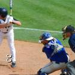

I am 48 years old. I graduated from Berry College in Rome, Georgia. I have been married for 4 years. My wife and I moved to North Carolina one year ago from the Atlanta area. We have 2 cats I enjoy sports, especially football and baseball. My favorite teams are the Dallas Cowboys and the Atlanta Braves. I like to to eat all types of food, with pizza being my favorite. My favorite type of music is rock.
